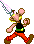

Consigne
Afin d'apprendre à créer des animations sur Processing qui pourraient être utilisées dans des jeux vidéos en 2D. Ce TP a pour but de créer un programme où faire se déplacer de gauche à droite le personnage d'Astérix ainsi que le faire sauter, en utilisant un sprite.

Investissement personnel
Le sprite est une seule image composée de plusieurs images de personnage ou d'élément du décor. On doit alors "découper" le sprite en plusieurs petites images,à l'aide d'un logiciel de traitement d'images et les utiliser quand il est nécessaire. Ces images sont en .png car ce format, est d'abord adapté à ce type d'images, mais il permet surtout de pouvoir utiliser un fond transparent au lieu d'un fond plein.

Les déplacements devaient être contrôllés par les flèches directionnelles du clavier, pour cela j'ai utilisé une fonction très efficace qui permet de récuppérer la touche appuyée (keyPressed) ou relachée(keyReleased) dans un tableau :
// détection touche pressée
void keyPressed() {
keyboard[keyCode] = true;
//39 --> droite
//37 --> gauche
//38 --> haut
}
// détection touche relachée
void keyReleased() {
keyboard[keyCode] = false;
}
Les déplacements en eux mêmes sont ensuite assez faciles à réaliser puisqu'il suffit d'incrémenter ou décrémenter la position horizontale de l'image représentant le personnage. Pour un meilleur rendu lors des déplacement nous faisons défiler différentes images du personnages à différent moment de se marche créant ainsi l'effet qu'il marche. Pour cela on met toutes les images dans un tableau et affichera l'image à un indice différent du tableau à chaque mise à jour de l'écran (27 fois par seconde dans ce programme). Afin d'économiser la taille des fichiers pour faire marcher le personnage dans un sens ou l'autre, on utilise un effet mirroir en donnant à l'image une taille négative : scale(-1,1)
J'y ai également créé la possibilité de faire sauter le personnage, ce qui est assez semblable aux déplacements. Toutefois pour donner un aspect plus réaliste au jeu il a fallu bloquer la possibilitée de déplacement une fois en l'air, à l'aide une variable booléenne, permettant de savoir si le personnage est en l'air ou pas.
Ressentis
J'ai trouvé ce TP très intéressant parce qu'il permet de découvrir les mécanismes derrière le fonctionnement de certains jeux vidéos. Toutefois il permet aussi de rendre compte à quel point il est difficile de gérer des timings sur Processing puisque la fonction qui fait une pause dans le programme :delay()ne permet pas d'executer d'autre code en même temps, il faut donc utiliser le système de raffraichissement ingénieusement pour réaliser ces animations.
J'aurais aimé avoir le temps de rajouter une animation à l'aide sprite pour le saut afin de lrendre plus réaliste et trouver les "bonnes" valeur qui le rendrait plus naturel. Et même rajouter d'autres animations pour rendre le tout plus vivant et fonctionnel.